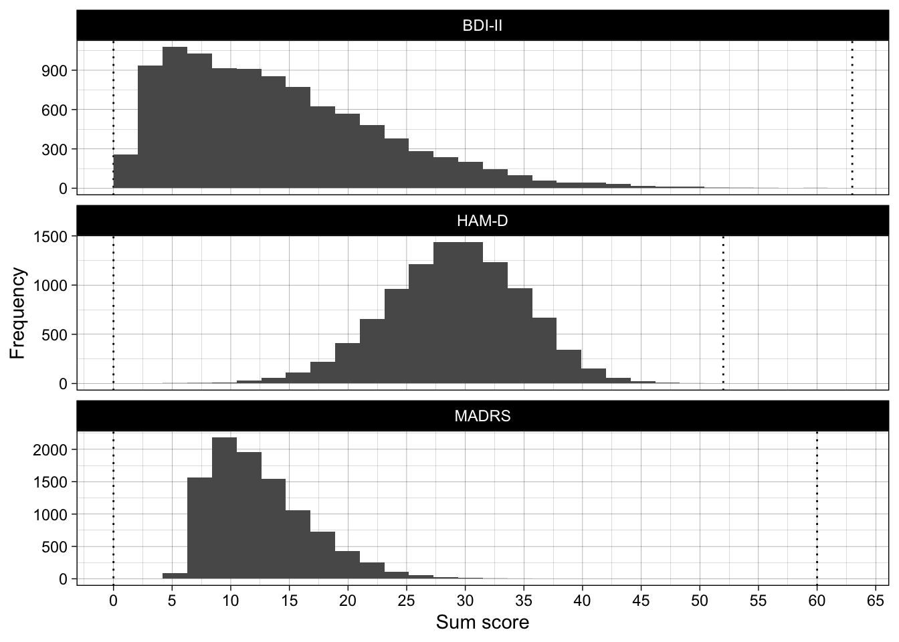
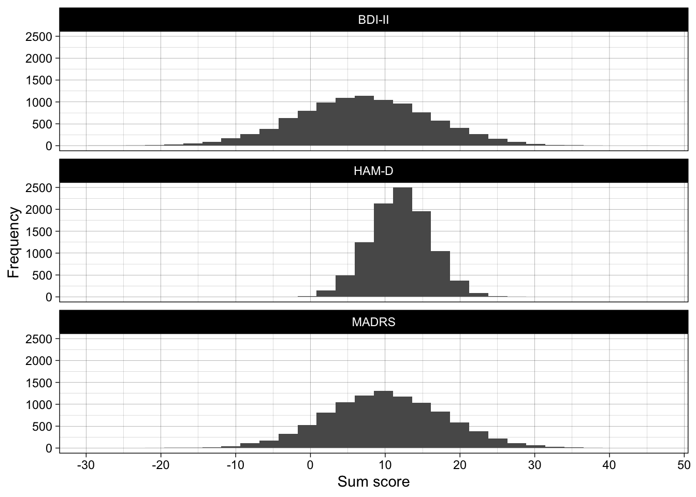
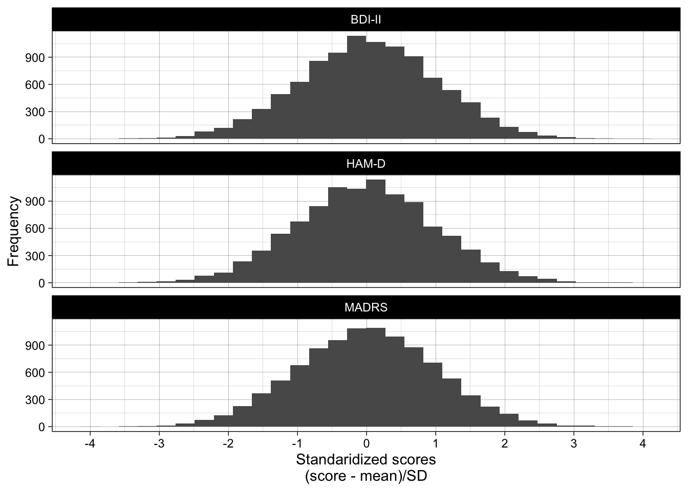
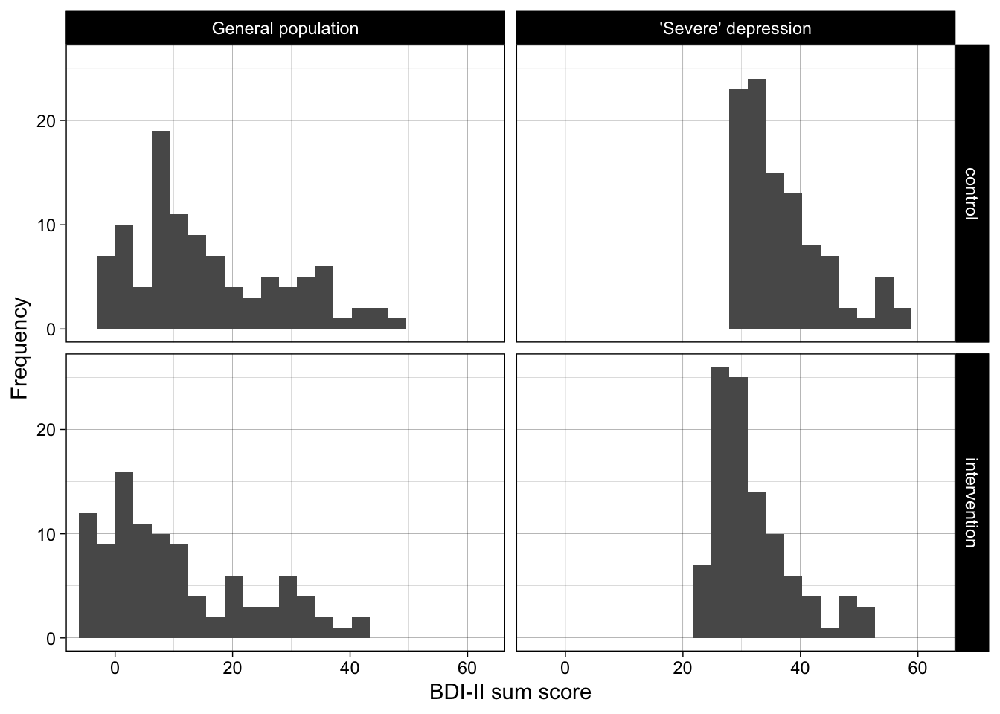
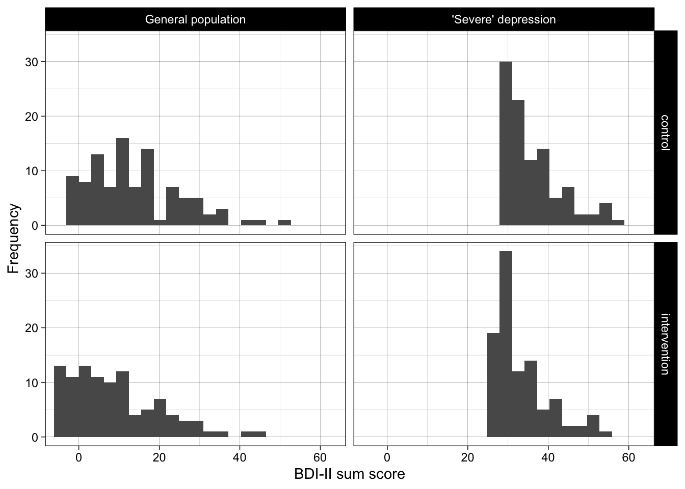
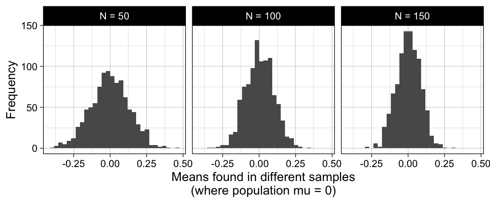
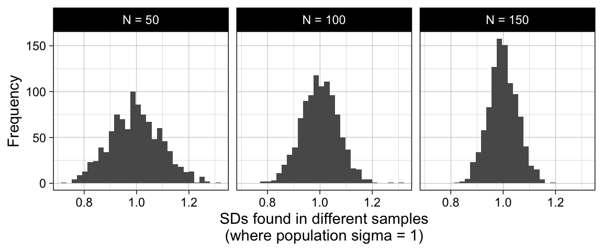
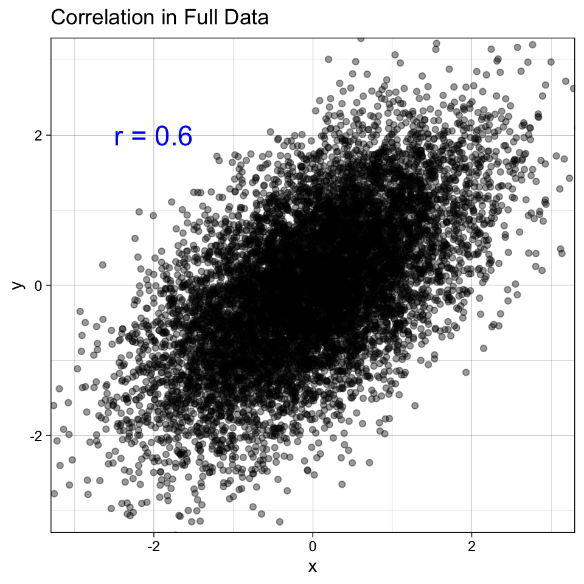
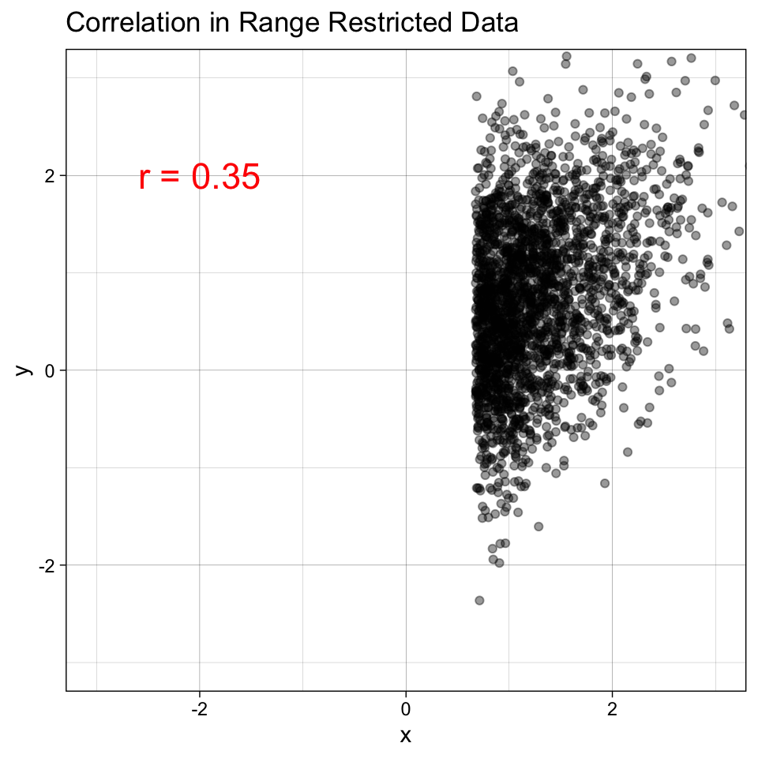

library(tidyverse)
library(scales)
library(sn)
library(janitor)
library(effsize)
library(faux)17 Standardized effect sizes and range restriction ✎ Very rough draft
17.1 Dependencies
17.2 Load data
Real BDI-II data is taken from Cataldo et al. (2022) Abnormal Evidence Accumulation Underlies the Positive Memory Deficit in Depression, doi: 10.1037/xge0001268.
data_bdi <- read_csv("../data/bdi_data.csv")17.3 Why standardize?
They have different possible ranges, different population means (\(\mu\)), and different population SDs (\(\sigma\)).
Even if had perfect that a given therapy has a (population) efficacy of lowering BDI-II depression scores by 6 points, without knowing a lot about the relationships between the BDI-II and other scores, we know little about how many points the same therapy would affect depression scores on the MADRS or the HAM-D.
(surprisingly, very little work is ever done to collect information on the relationship between different scores so that we could know this)
Imagine three different published RCTs, each of which studied the efficacy of the same form of cognitive behavioral therapy for depression:
- RCT 1 found that it lowered depression scores on the BDI-II by 6 points on average
- RCT 2 found that it lowered depression scores on the MADRS by 8 points on average
- RCT 3 found that it lowered depression scores on the HAM-D by 4 points on average
What is the efficacy of the intervention for depression scores on the PHQ-9? This is impossible to answer without knowing a lot about the details of the different scales (e.g., their min/max scores), the distribution of each scale’s scores in the population (eg population \(\mu\) and \(\sigma\)), and the relationship between different depression scales in the population. A one-point-change on one scale likely has a very different meaning to a one-point-change on another scale.
What is the efficacy of the intervention for depression in general? This too is impossible to answer as there is no common scale between them.
‘Standardized’ effect sizes are useful here as they provide common units. Instead of points on the self-report scale (i.e., sum scores), which differ between scales, standardized effect sizes generally use Standard Deviations as their units. For example, Cohen’s d = 0.2 means that there are 0.2 Standard Deviations of difference between the two groups.
In principle, standardized effect sizes are extremely useful as they allow us to draw comparisons between studies using very different outcome measures, or indeed to synthesise results between such studies (i.e., meta-analysis).
17.3.1 Visualise
Semi-realistic depression scores on different scales.
N <- 10000
generated_data <-
bind_rows(
tibble(measure = "BDI-II",
score = rsn(n = N,
xi = 2, # location
omega = 15, # scale
alpha = 16),
max_score = 63), # skew
tibble(measure = "HAM-D",
score = rsn(n = N,
xi = 33, # location
omega = 7, # scale
alpha = -1),
max_score = 52), # skew
tibble(measure = "MADRS",
score = rsn(n = N,
xi = 7, # location
omega = 7, # scale
alpha = 9),
max_score = 60) # skew
) |>
mutate(score = case_when(score < 0 ~ 0,
score > max_score ~ max_score,
TRUE ~ score))
ggplot(generated_data, aes(score)) +
geom_vline(aes(xintercept = 0), linetype = "dotted") +
geom_vline(aes(xintercept = max_score), linetype = "dotted") +
geom_histogram(boundary = 0) +
scale_x_continuous(breaks = breaks_pretty(n = 10)) +
facet_wrap(~ measure, ncol = 1, scales = "free_y") +
theme_linedraw() +
ylab("Frequency") +
xlab("Sum score")
For the moment, let’s pretend like these scales produce continuous normal data that only differ in their population location (\(\mu\)) and scale (\(\sigma\)):
generated_data <-
bind_rows(
tibble(measure = "BDI-II",
score = rnorm(n = N, mean = 7, sd = 9),
max_score = 63),
tibble(measure = "HAM-D",
score = rnorm(n = N, mean = 12, sd = 4),
max_score = 52),
tibble(measure = "MADRS",
score = rnorm(n = N, mean = 10, sd = 8),
max_score = 60)
)
ggplot(generated_data, aes(score)) +
geom_histogram() +
scale_x_continuous(breaks = breaks_pretty(n = 10)) +
facet_wrap(~ measure, ncol = 1) +
theme_linedraw() +
ylab("Frequency") +
xlab("Sum score")
A one-point change on the BDI-II still means something very different to a one-point change on the MADRS or HAM-D.
Data for a single sample can be standardized by taking each participant’s score, deducting the mean score (the sample estimate of \(\mu\)), and then dividing by the SD of scores (the sample estimate of \(\sigma\)). Now, all scales have a mean of 0 and an SD of 1. A one-point change on any scale has the same interpretation: a one-standard deviation change on that scale’s scores:
generated_data <-
bind_rows(
tibble(measure = "BDI-II",
score = rnorm(n = N, mean = 0, sd = 1),
max_score = 63),
tibble(measure = "HAM-D",
score = rnorm(n = N, mean = 0, sd = 1),
max_score = 52),
tibble(measure = "MADRS",
score = rnorm(n = N, mean = 0, sd = 1),
max_score = 60)
)
ggplot(generated_data, aes(score)) +
geom_histogram() +
scale_x_continuous(breaks = breaks_pretty(n = 10)) +
facet_wrap(~ measure, ncol = 1) +
theme_linedraw() +
ylab("Frequency") +
xlab("Standaridized scores\n(score - mean)/SD")
Yay, now we have scores that can be compared between scales, e.g., in a meta-analysis.
How can this go wrong?
17.4 Influence of preselection on Cohen’s d
Note that in the below, only data at pre is real BDI-II data. Data at post is modified data (i.e., offset by known amounts).
17.4.1 Example 1
17.4.1.1 Wrangle/simulate
set.seed(42)
subset_no_preselection <- data_bdi |>
rename(control = bdi_score) |>
# simulate a 'intervention' score that is 5 points lower than pre
mutate(intervention = control - 5) |>
# sample 100 participants from the real data
slice_sample(n = 100) |>
mutate(recruitment = "General population") |>
# reshape
pivot_longer(cols = c(control, intervention),
names_to = "condition",
values_to = "bdi_score") |>
mutate(condition = fct_relevel(condition, "control", "intervention"))
subset_preselection_for_severe <- data_bdi |>
rename(control = bdi_score) |>
# simulate recruitment into the study requiring a score of 29 or more at pre ("severe" depression according to the BDI-II manual)
filter(control >= 29) |>
# simulate a 'intervention' score that is 5 points lower than pre
mutate(intervention = control - 5) |>
# sample 100 participants from the real data
slice_sample(n = 100) |>
mutate(recruitment = "'Severe' depression") |>
# reshape
pivot_longer(cols = c(control, intervention),
names_to = "condition",
values_to = "bdi_score") |>
mutate(condition = fct_relevel(condition, "control", "intervention"))17.4.1.2 Plot
bind_rows(subset_no_preselection,
subset_preselection_for_severe) |>
mutate(recruitment = fct_relevel(recruitment, "General population", "'Severe' depression")) |>
## plot
ggplot(aes(bdi_score)) +
geom_histogram(boundary = 0, bins = 21) +
scale_fill_viridis_d(begin = 0.3, end = 0.7) +
theme_linedraw() +
coord_cartesian(xlim = c(-5, 63)) +
facet_grid(condition ~ recruitment) +
xlab("BDI-II sum score") +
ylab("Frequency")
17.4.1.3 Analyze
Exercise:
For each of the two datasets, please calculate:
- The unstandardized difference in means between the groups. To do this, calculate the mean BDI-II score in each condition (control vs intervention) and then the difference between the two means.
- The standardized mean difference (Cohen’s d) between the two groups (e.g., using
effsize::cohen.d()).
Does the intervention work? Think about the simulated population effect.
# datasets:
subset_no_preselection| id | recruitment | condition | bdi_score |
|---|---|---|---|
| 2527472 | General population | control | 2 |
| 2527472 | General population | intervention | -3 |
| 2516002 | General population | control | 9 |
| 2516002 | General population | intervention | 4 |
| 2553222 | General population | control | 33 |
| 2553222 | General population | intervention | 28 |
| 2551678 | General population | control | 26 |
| 2551678 | General population | intervention | 21 |
| 2555281 | General population | control | 13 |
| 2555281 | General population | intervention | 8 |
| 2553095 | General population | control | 39 |
| 2553095 | General population | intervention | 34 |
| 2537456 | General population | control | 0 |
| 2537456 | General population | intervention | -5 |
| 2501685 | General population | control | 8 |
| 2501685 | General population | intervention | 3 |
| 2552741 | General population | control | 14 |
| 2552741 | General population | intervention | 9 |
| 2558996 | General population | control | 9 |
| 2558996 | General population | intervention | 4 |
| 2499685 | General population | control | 15 |
| 2499685 | General population | intervention | 10 |
| 2517834 | General population | control | 48 |
| 2517834 | General population | intervention | 43 |
| 2508461 | General population | control | 26 |
| 2508461 | General population | intervention | 21 |
| 2531306 | General population | control | 24 |
| 2531306 | General population | intervention | 19 |
| 2520038 | General population | control | 13 |
| 2520038 | General population | intervention | 8 |
| 2547996 | General population | control | 0 |
| 2547996 | General population | intervention | -5 |
| 2558879 | General population | control | 20 |
| 2558879 | General population | intervention | 15 |
| 2530195 | General population | control | 4 |
| 2530195 | General population | intervention | -1 |
| 2557783 | General population | control | 1 |
| 2557783 | General population | intervention | -4 |
| 2548425 | General population | control | 22 |
| 2548425 | General population | intervention | 17 |
| 2549930 | General population | control | 0 |
| 2549930 | General population | intervention | -5 |
| 2531227 | General population | control | 46 |
| 2531227 | General population | intervention | 41 |
| 2554305 | General population | control | 11 |
| 2554305 | General population | intervention | 6 |
| 2547277 | General population | control | 9 |
| 2547277 | General population | intervention | 4 |
| 2513235 | General population | control | 17 |
| 2513235 | General population | intervention | 12 |
| 2559230 | General population | control | 3 |
| 2559230 | General population | intervention | -2 |
| 2523816 | General population | control | 7 |
| 2523816 | General population | intervention | 2 |
| 2558898 | General population | control | 25 |
| 2558898 | General population | intervention | 20 |
| 2561074 | General population | control | 4 |
| 2561074 | General population | intervention | -1 |
| 2553278 | General population | control | 10 |
| 2553278 | General population | intervention | 5 |
| 2514932 | General population | control | 16 |
| 2514932 | General population | intervention | 11 |
| 2519879 | General population | control | 0 |
| 2519879 | General population | intervention | -5 |
| 2515591 | General population | control | 7 |
| 2515591 | General population | intervention | 2 |
| 2558337 | General population | control | 33 |
| 2558337 | General population | intervention | 28 |
| 2546768 | General population | control | 31 |
| 2546768 | General population | intervention | 26 |
| 2549738 | General population | control | 7 |
| 2549738 | General population | intervention | 2 |
| 2507151 | General population | control | 20 |
| 2507151 | General population | intervention | 15 |
| 2510571 | General population | control | 35 |
| 2510571 | General population | intervention | 30 |
| 2511959 | General population | control | 0 |
| 2511959 | General population | intervention | -5 |
| 2525259 | General population | control | 10 |
| 2525259 | General population | intervention | 5 |
| 2549778 | General population | control | 14 |
| 2549778 | General population | intervention | 9 |
| 2544481 | General population | control | 33 |
| 2544481 | General population | intervention | 28 |
| 2548774 | General population | control | 12 |
| 2548774 | General population | intervention | 7 |
| 2556311 | General population | control | 7 |
| 2556311 | General population | intervention | 2 |
| 2548300 | General population | control | 29 |
| 2548300 | General population | intervention | 24 |
| 2532034 | General population | control | 28 |
| 2532034 | General population | intervention | 23 |
| 2513364 | General population | control | 7 |
| 2513364 | General population | intervention | 2 |
| 2519655 | General population | control | 41 |
| 2519655 | General population | intervention | 36 |
| 2506427 | General population | control | 8 |
| 2506427 | General population | intervention | 3 |
| 2550441 | General population | control | 0 |
| 2550441 | General population | intervention | -5 |
| 2518969 | General population | control | 7 |
| 2518969 | General population | intervention | 2 |
| 2545465 | General population | control | 20 |
| 2545465 | General population | intervention | 15 |
| 2550240 | General population | control | 16 |
| 2550240 | General population | intervention | 11 |
| 2543268 | General population | control | 22 |
| 2543268 | General population | intervention | 17 |
| 2541078 | General population | control | 11 |
| 2541078 | General population | intervention | 6 |
| 2501062 | General population | control | 1 |
| 2501062 | General population | intervention | -4 |
| 2525777 | General population | control | 8 |
| 2525777 | General population | intervention | 3 |
| 2500351 | General population | control | 8 |
| 2500351 | General population | intervention | 3 |
| 2560016 | General population | control | 16 |
| 2560016 | General population | intervention | 11 |
| 2505081 | General population | control | 16 |
| 2505081 | General population | intervention | 11 |
| 2561422 | General population | control | 5 |
| 2561422 | General population | intervention | 0 |
| 2505565 | General population | control | 1 |
| 2505565 | General population | intervention | -4 |
| 2549962 | General population | control | 37 |
| 2549962 | General population | intervention | 32 |
| 2503861 | General population | control | 16 |
| 2503861 | General population | intervention | 11 |
| 2549668 | General population | control | 16 |
| 2549668 | General population | intervention | 11 |
| 2544579 | General population | control | 2 |
| 2544579 | General population | intervention | -3 |
| 2499256 | General population | control | 12 |
| 2499256 | General population | intervention | 7 |
| 2556492 | General population | control | 26 |
| 2556492 | General population | intervention | 21 |
| 2550033 | General population | control | 20 |
| 2550033 | General population | intervention | 15 |
| 2549858 | General population | control | 12 |
| 2549858 | General population | intervention | 7 |
| 2504136 | General population | control | 13 |
| 2504136 | General population | intervention | 8 |
| 2548183 | General population | control | 37 |
| 2548183 | General population | intervention | 32 |
| 2516182 | General population | control | 4 |
| 2516182 | General population | intervention | -1 |
| 2548959 | General population | control | 26 |
| 2548959 | General population | intervention | 21 |
| 2514635 | General population | control | 7 |
| 2514635 | General population | intervention | 2 |
| 2507219 | General population | control | 35 |
| 2507219 | General population | intervention | 30 |
| 2549913 | General population | control | 32 |
| 2549913 | General population | intervention | 27 |
| 2504963 | General population | control | 1 |
| 2504963 | General population | intervention | -4 |
| 2549937 | General population | control | 1 |
| 2549937 | General population | intervention | -4 |
| 2514793 | General population | control | 32 |
| 2514793 | General population | intervention | 27 |
| 2519828 | General population | control | 2 |
| 2519828 | General population | intervention | -3 |
| 2504576 | General population | control | 41 |
| 2504576 | General population | intervention | 36 |
| 2545612 | General population | control | 10 |
| 2545612 | General population | intervention | 5 |
| 2553651 | General population | control | 37 |
| 2553651 | General population | intervention | 32 |
| 2551266 | General population | control | 15 |
| 2551266 | General population | intervention | 10 |
| 2547101 | General population | control | 10 |
| 2547101 | General population | intervention | 5 |
| 2514455 | General population | control | 0 |
| 2514455 | General population | intervention | -5 |
| 2544235 | General population | control | 44 |
| 2544235 | General population | intervention | 39 |
| 2502742 | General population | control | 10 |
| 2502742 | General population | intervention | 5 |
| 2547075 | General population | control | 8 |
| 2547075 | General population | intervention | 3 |
| 2549443 | General population | control | 2 |
| 2549443 | General population | intervention | -3 |
| 2519041 | General population | control | 8 |
| 2519041 | General population | intervention | 3 |
| 2538828 | General population | control | 7 |
| 2538828 | General population | intervention | 2 |
| 2520951 | General population | control | 11 |
| 2520951 | General population | intervention | 6 |
| 2522047 | General population | control | 13 |
| 2522047 | General population | intervention | 8 |
| 2552493 | General population | control | 28 |
| 2552493 | General population | intervention | 23 |
| 2528997 | General population | control | 7 |
| 2528997 | General population | intervention | 2 |
| 2560321 | General population | control | 7 |
| 2560321 | General population | intervention | 2 |
| 2552977 | General population | control | 13 |
| 2552977 | General population | intervention | 8 |
| 2556889 | General population | control | 36 |
| 2556889 | General population | intervention | 31 |
subset_preselection_for_severe| id | recruitment | condition | bdi_score |
|---|---|---|---|
| 2519655 | ‘Severe’ depression | control | 41 |
| 2519655 | ‘Severe’ depression | intervention | 36 |
| 2551157 | ‘Severe’ depression | control | 32 |
| 2551157 | ‘Severe’ depression | intervention | 27 |
| 2514051 | ‘Severe’ depression | control | 40 |
| 2514051 | ‘Severe’ depression | intervention | 35 |
| 2513857 | ‘Severe’ depression | control | 42 |
| 2513857 | ‘Severe’ depression | intervention | 37 |
| 2559761 | ‘Severe’ depression | control | 38 |
| 2559761 | ‘Severe’ depression | intervention | 33 |
| 2544794 | ‘Severe’ depression | control | 44 |
| 2544794 | ‘Severe’ depression | intervention | 39 |
| 2553080 | ‘Severe’ depression | control | 36 |
| 2553080 | ‘Severe’ depression | intervention | 31 |
| 2507219 | ‘Severe’ depression | control | 35 |
| 2507219 | ‘Severe’ depression | intervention | 30 |
| 2548089 | ‘Severe’ depression | control | 44 |
| 2548089 | ‘Severe’ depression | intervention | 39 |
| 2510412 | ‘Severe’ depression | control | 34 |
| 2510412 | ‘Severe’ depression | intervention | 29 |
| 2542607 | ‘Severe’ depression | control | 39 |
| 2542607 | ‘Severe’ depression | intervention | 34 |
| 2504292 | ‘Severe’ depression | control | 38 |
| 2504292 | ‘Severe’ depression | intervention | 33 |
| 2547141 | ‘Severe’ depression | control | 42 |
| 2547141 | ‘Severe’ depression | intervention | 37 |
| 2501026 | ‘Severe’ depression | control | 33 |
| 2501026 | ‘Severe’ depression | intervention | 28 |
| 2560956 | ‘Severe’ depression | control | 44 |
| 2560956 | ‘Severe’ depression | intervention | 39 |
| 2553853 | ‘Severe’ depression | control | 32 |
| 2553853 | ‘Severe’ depression | intervention | 27 |
| 2547241 | ‘Severe’ depression | control | 57 |
| 2547241 | ‘Severe’ depression | intervention | 52 |
| 2554118 | ‘Severe’ depression | control | 51 |
| 2554118 | ‘Severe’ depression | intervention | 46 |
| 2510045 | ‘Severe’ depression | control | 35 |
| 2510045 | ‘Severe’ depression | intervention | 30 |
| 2553418 | ‘Severe’ depression | control | 30 |
| 2553418 | ‘Severe’ depression | intervention | 25 |
| 2544508 | ‘Severe’ depression | control | 35 |
| 2544508 | ‘Severe’ depression | intervention | 30 |
| 2555123 | ‘Severe’ depression | control | 35 |
| 2555123 | ‘Severe’ depression | intervention | 30 |
| 2512871 | ‘Severe’ depression | control | 39 |
| 2512871 | ‘Severe’ depression | intervention | 34 |
| 2544617 | ‘Severe’ depression | control | 40 |
| 2544617 | ‘Severe’ depression | intervention | 35 |
| 2553651 | ‘Severe’ depression | control | 37 |
| 2553651 | ‘Severe’ depression | intervention | 32 |
| 2543061 | ‘Severe’ depression | control | 34 |
| 2543061 | ‘Severe’ depression | intervention | 29 |
| 2504475 | ‘Severe’ depression | control | 34 |
| 2504475 | ‘Severe’ depression | intervention | 29 |
| 2510585 | ‘Severe’ depression | control | 34 |
| 2510585 | ‘Severe’ depression | intervention | 29 |
| 2503608 | ‘Severe’ depression | control | 32 |
| 2503608 | ‘Severe’ depression | intervention | 27 |
| 2549635 | ‘Severe’ depression | control | 31 |
| 2549635 | ‘Severe’ depression | intervention | 26 |
| 2552848 | ‘Severe’ depression | control | 55 |
| 2552848 | ‘Severe’ depression | intervention | 50 |
| 2513202 | ‘Severe’ depression | control | 29 |
| 2513202 | ‘Severe’ depression | intervention | 24 |
| 2527630 | ‘Severe’ depression | control | 34 |
| 2527630 | ‘Severe’ depression | intervention | 29 |
| 2519682 | ‘Severe’ depression | control | 31 |
| 2519682 | ‘Severe’ depression | intervention | 26 |
| 2545452 | ‘Severe’ depression | control | 32 |
| 2545452 | ‘Severe’ depression | intervention | 27 |
| 2558337 | ‘Severe’ depression | control | 33 |
| 2558337 | ‘Severe’ depression | intervention | 28 |
| 2544453 | ‘Severe’ depression | control | 31 |
| 2544453 | ‘Severe’ depression | intervention | 26 |
| 2546759 | ‘Severe’ depression | control | 29 |
| 2546759 | ‘Severe’ depression | intervention | 24 |
| 2524639 | ‘Severe’ depression | control | 38 |
| 2524639 | ‘Severe’ depression | intervention | 33 |
| 2556658 | ‘Severe’ depression | control | 43 |
| 2556658 | ‘Severe’ depression | intervention | 38 |
| 2548854 | ‘Severe’ depression | control | 39 |
| 2548854 | ‘Severe’ depression | intervention | 34 |
| 2553870 | ‘Severe’ depression | control | 33 |
| 2553870 | ‘Severe’ depression | intervention | 28 |
| 2556889 | ‘Severe’ depression | control | 36 |
| 2556889 | ‘Severe’ depression | intervention | 31 |
| 2550345 | ‘Severe’ depression | control | 31 |
| 2550345 | ‘Severe’ depression | intervention | 26 |
| 2509595 | ‘Severe’ depression | control | 53 |
| 2509595 | ‘Severe’ depression | intervention | 48 |
| 2548300 | ‘Severe’ depression | control | 29 |
| 2548300 | ‘Severe’ depression | intervention | 24 |
| 2512751 | ‘Severe’ depression | control | 30 |
| 2512751 | ‘Severe’ depression | intervention | 25 |
| 2550823 | ‘Severe’ depression | control | 37 |
| 2550823 | ‘Severe’ depression | intervention | 32 |
| 2554001 | ‘Severe’ depression | control | 38 |
| 2554001 | ‘Severe’ depression | intervention | 33 |
| 2500765 | ‘Severe’ depression | control | 30 |
| 2500765 | ‘Severe’ depression | intervention | 25 |
| 2512004 | ‘Severe’ depression | control | 42 |
| 2512004 | ‘Severe’ depression | intervention | 37 |
| 2541654 | ‘Severe’ depression | control | 29 |
| 2541654 | ‘Severe’ depression | intervention | 24 |
| 2551370 | ‘Severe’ depression | control | 47 |
| 2551370 | ‘Severe’ depression | intervention | 42 |
| 2548377 | ‘Severe’ depression | control | 33 |
| 2548377 | ‘Severe’ depression | intervention | 28 |
| 2559077 | ‘Severe’ depression | control | 30 |
| 2559077 | ‘Severe’ depression | intervention | 25 |
| 2549580 | ‘Severe’ depression | control | 37 |
| 2549580 | ‘Severe’ depression | intervention | 32 |
| 2553886 | ‘Severe’ depression | control | 54 |
| 2553886 | ‘Severe’ depression | intervention | 49 |
| 2546920 | ‘Severe’ depression | control | 33 |
| 2546920 | ‘Severe’ depression | intervention | 28 |
| 2554844 | ‘Severe’ depression | control | 32 |
| 2554844 | ‘Severe’ depression | intervention | 27 |
| 2518232 | ‘Severe’ depression | control | 38 |
| 2518232 | ‘Severe’ depression | intervention | 33 |
| 2549913 | ‘Severe’ depression | control | 32 |
| 2549913 | ‘Severe’ depression | intervention | 27 |
| 2544779 | ‘Severe’ depression | control | 34 |
| 2544779 | ‘Severe’ depression | intervention | 29 |
| 2556734 | ‘Severe’ depression | control | 53 |
| 2556734 | ‘Severe’ depression | intervention | 48 |
| 2521318 | ‘Severe’ depression | control | 38 |
| 2521318 | ‘Severe’ depression | intervention | 33 |
| 2508378 | ‘Severe’ depression | control | 31 |
| 2508378 | ‘Severe’ depression | intervention | 26 |
| 2509787 | ‘Severe’ depression | control | 37 |
| 2509787 | ‘Severe’ depression | intervention | 32 |
| 2549528 | ‘Severe’ depression | control | 32 |
| 2549528 | ‘Severe’ depression | intervention | 27 |
| 2545965 | ‘Severe’ depression | control | 44 |
| 2545965 | ‘Severe’ depression | intervention | 39 |
| 2553256 | ‘Severe’ depression | control | 40 |
| 2553256 | ‘Severe’ depression | intervention | 35 |
| 2540711 | ‘Severe’ depression | control | 46 |
| 2540711 | ‘Severe’ depression | intervention | 41 |
| 2548463 | ‘Severe’ depression | control | 32 |
| 2548463 | ‘Severe’ depression | intervention | 27 |
| 2531227 | ‘Severe’ depression | control | 46 |
| 2531227 | ‘Severe’ depression | intervention | 41 |
| 2504853 | ‘Severe’ depression | control | 54 |
| 2504853 | ‘Severe’ depression | intervention | 49 |
| 2526846 | ‘Severe’ depression | control | 29 |
| 2526846 | ‘Severe’ depression | intervention | 24 |
| 2503899 | ‘Severe’ depression | control | 30 |
| 2503899 | ‘Severe’ depression | intervention | 25 |
| 2561103 | ‘Severe’ depression | control | 44 |
| 2561103 | ‘Severe’ depression | intervention | 39 |
| 2527263 | ‘Severe’ depression | control | 31 |
| 2527263 | ‘Severe’ depression | intervention | 26 |
| 2516049 | ‘Severe’ depression | control | 31 |
| 2516049 | ‘Severe’ depression | intervention | 26 |
| 2551475 | ‘Severe’ depression | control | 36 |
| 2551475 | ‘Severe’ depression | intervention | 31 |
| 2499508 | ‘Severe’ depression | control | 29 |
| 2499508 | ‘Severe’ depression | intervention | 24 |
| 2550301 | ‘Severe’ depression | control | 34 |
| 2550301 | ‘Severe’ depression | intervention | 29 |
| 2510571 | ‘Severe’ depression | control | 35 |
| 2510571 | ‘Severe’ depression | intervention | 30 |
| 2550755 | ‘Severe’ depression | control | 57 |
| 2550755 | ‘Severe’ depression | intervention | 52 |
| 2499556 | ‘Severe’ depression | control | 29 |
| 2499556 | ‘Severe’ depression | intervention | 24 |
| 2549645 | ‘Severe’ depression | control | 30 |
| 2549645 | ‘Severe’ depression | intervention | 25 |
| 2501892 | ‘Severe’ depression | control | 41 |
| 2501892 | ‘Severe’ depression | intervention | 36 |
| 2542031 | ‘Severe’ depression | control | 35 |
| 2542031 | ‘Severe’ depression | intervention | 30 |
| 2499648 | ‘Severe’ depression | control | 35 |
| 2499648 | ‘Severe’ depression | intervention | 30 |
| 2556565 | ‘Severe’ depression | control | 30 |
| 2556565 | ‘Severe’ depression | intervention | 25 |
| 2558817 | ‘Severe’ depression | control | 30 |
| 2558817 | ‘Severe’ depression | intervention | 25 |
| 2527483 | ‘Severe’ depression | control | 34 |
| 2527483 | ‘Severe’ depression | intervention | 29 |
| 2548305 | ‘Severe’ depression | control | 35 |
| 2548305 | ‘Severe’ depression | intervention | 30 |
| 2517834 | ‘Severe’ depression | control | 48 |
| 2517834 | ‘Severe’ depression | intervention | 43 |
| 2521337 | ‘Severe’ depression | control | 39 |
| 2521337 | ‘Severe’ depression | intervention | 34 |
| 2550458 | ‘Severe’ depression | control | 32 |
| 2550458 | ‘Severe’ depression | intervention | 27 |
| 2514793 | ‘Severe’ depression | control | 32 |
| 2514793 | ‘Severe’ depression | intervention | 27 |
| 2552432 | ‘Severe’ depression | control | 33 |
| 2552432 | ‘Severe’ depression | intervention | 28 |
| 2530498 | ‘Severe’ depression | control | 31 |
| 2530498 | ‘Severe’ depression | intervention | 26 |
| 2504576 | ‘Severe’ depression | control | 41 |
| 2504576 | ‘Severe’ depression | intervention | 36 |
| 2502986 | ‘Severe’ depression | control | 41 |
| 2502986 | ‘Severe’ depression | intervention | 36 |
Solution
subset_no_preselection |>
group_by(condition) |>
summarize(mean_bdi_score = mean(bdi_score)) |>
pivot_wider(names_from = condition,
values_from = mean_bdi_score) |>
mutate(mean_diff = intervention - control)| control | intervention | mean_diff |
|---|---|---|
| 15.65 | 10.65 | -5 |
subset_preselection_for_severe |>
group_by(condition) |>
summarize(mean_bdi_score = mean(bdi_score)) |>
pivot_wider(names_from = condition,
values_from = mean_bdi_score) |>
mutate(mean_diff = intervention - control)| control | intervention | mean_diff |
|---|---|---|
| 36.95 | 31.95 | -5 |
effsize::cohen.d(formula = bdi_score ~ condition,
data = subset_no_preselection)$estimate |>
round_half_up(2)[1] 0.4effsize::cohen.d(formula = bdi_score ~ condition,
data = subset_preselection_for_severe)$estimate |>
round_half_up(2)[1] 0.71Equivalent change in means, different change in Cohen’s d
We know for a fact that the true difference in means is the same in both studies, because we create the data to be this way (i.e., scores at post are exactly pre - 5). The unstandardized effect sizes (pre-post difference in means) are the same, by definition.
Despite this, the two studies produce the different Cohen’s d values. The standardized effect sizes are the different, despite exactly the same pre-post differences between the studies.
If the point of standardized effect sizes is to be able to compare them between studies on a common scale, and they don’t do this, what is their point?
17.4.2 Example 2
The only difference here is a) the true difference in means and b) the seed.
17.4.2.1 Wrangle/simulate
set.seed(46)
subset_no_preselection <- data_bdi |>
rename(control = bdi_score) |>
# simulate a 'intervention' score that is 5 points lower than pre
mutate(intervention = control - 5) |>
# sample 100 participants from the real data
slice_sample(n = 100) |>
mutate(recruitment = "General population") |>
# reshape
pivot_longer(cols = c(control, intervention),
names_to = "condition",
values_to = "bdi_score") |>
mutate(condition = fct_relevel(condition, "control", "intervention"))
subset_preselection_for_severe <- data_bdi |>
rename(control = bdi_score) |>
# simulate recruitment into the study requiring a score of 29 or more at pre ("severe" depression according to the BDI-II manual)
filter(control >= 29) |>
# simulate a 'intervention' score that is 5 points lower than pre
mutate(intervention = control - 3) |>
# sample 100 participants from the real data
slice_sample(n = 100) |>
mutate(recruitment = "'Severe' depression") |>
# reshape
pivot_longer(cols = c(control, intervention),
names_to = "condition",
values_to = "bdi_score") |>
mutate(condition = fct_relevel(condition, "control", "intervention"))17.4.2.2 Plot
bind_rows(subset_no_preselection,
subset_preselection_for_severe) |>
mutate(recruitment = fct_relevel(recruitment, "General population", "'Severe' depression")) |>
## plot
ggplot(aes(bdi_score)) +
geom_histogram(boundary = 0, bins = 21) +
scale_fill_viridis_d(begin = 0.3, end = 0.7) +
theme_linedraw() +
coord_cartesian(xlim = c(-5, 63)) +
facet_grid(condition ~ recruitment) +
xlab("BDI-II sum score") +
ylab("Frequency")
17.4.2.3 Analyze
Exercise:
Again, for each of the two datasets, please calculate:
- This is the unstandaridzied difference in means between the groups. To do this, calculate the mean BDI-II score in each condition (control vs intervention) and then the difference between the two means.
- The standardized mean difference (Cohen’s d) between the two groups (e.g., using
effsize::cohen.d()).
Does the intervention work? Think about the simulated population effect.
# datasets:
subset_no_preselection| id | recruitment | condition | bdi_score |
|---|---|---|---|
| 2506327 | General population | control | 42 |
| 2506327 | General population | intervention | 37 |
| 2548703 | General population | control | 11 |
| 2548703 | General population | intervention | 6 |
| 2551646 | General population | control | 17 |
| 2551646 | General population | intervention | 12 |
| 2512827 | General population | control | 6 |
| 2512827 | General population | intervention | 1 |
| 2544327 | General population | control | 0 |
| 2544327 | General population | intervention | -5 |
| 2551766 | General population | control | 24 |
| 2551766 | General population | intervention | 19 |
| 2530436 | General population | control | 24 |
| 2530436 | General population | intervention | 19 |
| 2540808 | General population | control | 12 |
| 2540808 | General population | intervention | 7 |
| 2548959 | General population | control | 26 |
| 2548959 | General population | intervention | 21 |
| 2510867 | General population | control | 12 |
| 2510867 | General population | intervention | 7 |
| 2553108 | General population | control | 26 |
| 2553108 | General population | intervention | 21 |
| 2540711 | General population | control | 46 |
| 2540711 | General population | intervention | 41 |
| 2512729 | General population | control | 18 |
| 2512729 | General population | intervention | 13 |
| 2543984 | General population | control | 4 |
| 2543984 | General population | intervention | -1 |
| 2559732 | General population | control | 11 |
| 2559732 | General population | intervention | 6 |
| 2515274 | General population | control | 3 |
| 2515274 | General population | intervention | -2 |
| 2552520 | General population | control | 10 |
| 2552520 | General population | intervention | 5 |
| 2543825 | General population | control | 36 |
| 2543825 | General population | intervention | 31 |
| 2543155 | General population | control | 4 |
| 2543155 | General population | intervention | -1 |
| 2548449 | General population | control | 17 |
| 2548449 | General population | intervention | 12 |
| 2551189 | General population | control | 1 |
| 2551189 | General population | intervention | -4 |
| 2553683 | General population | control | 16 |
| 2553683 | General population | intervention | 11 |
| 2549930 | General population | control | 0 |
| 2549930 | General population | intervention | -5 |
| 2504288 | General population | control | 1 |
| 2504288 | General population | intervention | -4 |
| 2519910 | General population | control | 6 |
| 2519910 | General population | intervention | 1 |
| 2542954 | General population | control | 7 |
| 2542954 | General population | intervention | 2 |
| 2541146 | General population | control | 8 |
| 2541146 | General population | intervention | 3 |
| 2531224 | General population | control | 6 |
| 2531224 | General population | intervention | 1 |
| 2527368 | General population | control | 21 |
| 2527368 | General population | intervention | 16 |
| 2541361 | General population | control | 13 |
| 2541361 | General population | intervention | 8 |
| 2544818 | General population | control | 10 |
| 2544818 | General population | intervention | 5 |
| 2522166 | General population | control | 0 |
| 2522166 | General population | intervention | -5 |
| 2507219 | General population | control | 35 |
| 2507219 | General population | intervention | 30 |
| 2551112 | General population | control | 18 |
| 2551112 | General population | intervention | 13 |
| 2549963 | General population | control | 17 |
| 2549963 | General population | intervention | 12 |
| 2549687 | General population | control | 30 |
| 2549687 | General population | intervention | 25 |
| 2558898 | General population | control | 25 |
| 2558898 | General population | intervention | 20 |
| 2510935 | General population | control | 23 |
| 2510935 | General population | intervention | 18 |
| 2555520 | General population | control | 1 |
| 2555520 | General population | intervention | -4 |
| 2544611 | General population | control | 5 |
| 2544611 | General population | intervention | 0 |
| 2553870 | General population | control | 33 |
| 2553870 | General population | intervention | 28 |
| 2542178 | General population | control | 16 |
| 2542178 | General population | intervention | 11 |
| 2549904 | General population | control | 7 |
| 2549904 | General population | intervention | 2 |
| 2509302 | General population | control | 7 |
| 2509302 | General population | intervention | 2 |
| 2553823 | General population | control | 0 |
| 2553823 | General population | intervention | -5 |
| 2561173 | General population | control | 29 |
| 2561173 | General population | intervention | 24 |
| 2519535 | General population | control | 3 |
| 2519535 | General population | intervention | -2 |
| 2498971 | General population | control | 10 |
| 2498971 | General population | intervention | 5 |
| 2512946 | General population | control | 11 |
| 2512946 | General population | intervention | 6 |
| 2520077 | General population | control | 1 |
| 2520077 | General population | intervention | -4 |
| 2527330 | General population | control | 17 |
| 2527330 | General population | intervention | 12 |
| 2499428 | General population | control | 27 |
| 2499428 | General population | intervention | 22 |
| 2547278 | General population | control | 4 |
| 2547278 | General population | intervention | -1 |
| 2544025 | General population | control | 3 |
| 2544025 | General population | intervention | -2 |
| 2505483 | General population | control | 4 |
| 2505483 | General population | intervention | -1 |
| 2514095 | General population | control | 8 |
| 2514095 | General population | intervention | 3 |
| 2555643 | General population | control | 15 |
| 2555643 | General population | intervention | 10 |
| 2514291 | General population | control | 0 |
| 2514291 | General population | intervention | -5 |
| 2551000 | General population | control | 17 |
| 2551000 | General population | intervention | 12 |
| 2525719 | General population | control | 4 |
| 2525719 | General population | intervention | -1 |
| 2551282 | General population | control | 14 |
| 2551282 | General population | intervention | 9 |
| 2518729 | General population | control | 12 |
| 2518729 | General population | intervention | 7 |
| 2519682 | General population | control | 31 |
| 2519682 | General population | intervention | 26 |
| 2547505 | General population | control | 14 |
| 2547505 | General population | intervention | 9 |
| 2549988 | General population | control | 17 |
| 2549988 | General population | intervention | 12 |
| 2545175 | General population | control | 12 |
| 2545175 | General population | intervention | 7 |
| 2553770 | General population | control | 17 |
| 2553770 | General population | intervention | 12 |
| 2548364 | General population | control | 24 |
| 2548364 | General population | intervention | 19 |
| 2510321 | General population | control | 23 |
| 2510321 | General population | intervention | 18 |
| 2545612 | General population | control | 10 |
| 2545612 | General population | intervention | 5 |
| 2558821 | General population | control | 18 |
| 2558821 | General population | intervention | 13 |
| 2559201 | General population | control | 12 |
| 2559201 | General population | intervention | 7 |
| 2556197 | General population | control | 10 |
| 2556197 | General population | intervention | 5 |
| 2553022 | General population | control | 6 |
| 2553022 | General population | intervention | 1 |
| 2514165 | General population | control | 7 |
| 2514165 | General population | intervention | 2 |
| 2510389 | General population | control | 22 |
| 2510389 | General population | intervention | 17 |
| 2545062 | General population | control | 0 |
| 2545062 | General population | intervention | -5 |
| 2505742 | General population | control | 10 |
| 2505742 | General population | intervention | 5 |
| 2559060 | General population | control | 0 |
| 2559060 | General population | intervention | -5 |
| 2520329 | General population | control | 10 |
| 2520329 | General population | intervention | 5 |
| 2546870 | General population | control | 0 |
| 2546870 | General population | intervention | -5 |
| 2553651 | General population | control | 37 |
| 2553651 | General population | intervention | 32 |
| 2553559 | General population | control | 22 |
| 2553559 | General population | intervention | 17 |
| 2525336 | General population | control | 14 |
| 2525336 | General population | intervention | 9 |
| 2556803 | General population | control | 0 |
| 2556803 | General population | intervention | -5 |
| 2542629 | General population | control | 29 |
| 2542629 | General population | intervention | 24 |
| 2554118 | General population | control | 51 |
| 2554118 | General population | intervention | 46 |
| 2524644 | General population | control | 5 |
| 2524644 | General population | intervention | 0 |
| 2547633 | General population | control | 6 |
| 2547633 | General population | intervention | 1 |
| 2558908 | General population | control | 15 |
| 2558908 | General population | intervention | 10 |
| 2519789 | General population | control | 18 |
| 2519789 | General population | intervention | 13 |
| 2553853 | General population | control | 32 |
| 2553853 | General population | intervention | 27 |
| 2551288 | General population | control | 29 |
| 2551288 | General population | intervention | 24 |
| 2559380 | General population | control | 3 |
| 2559380 | General population | intervention | -2 |
| 2518952 | General population | control | 17 |
| 2518952 | General population | intervention | 12 |
| 2508345 | General population | control | 6 |
| 2508345 | General population | intervention | 1 |
| 2558258 | General population | control | 25 |
| 2558258 | General population | intervention | 20 |
| 2510865 | General population | control | 14 |
| 2510865 | General population | intervention | 9 |
| 2511124 | General population | control | 7 |
| 2511124 | General population | intervention | 2 |
| 2555230 | General population | control | 11 |
| 2555230 | General population | intervention | 6 |
subset_preselection_for_severe| id | recruitment | condition | bdi_score |
|---|---|---|---|
| 2518232 | ‘Severe’ depression | control | 38 |
| 2518232 | ‘Severe’ depression | intervention | 35 |
| 2512966 | ‘Severe’ depression | control | 29 |
| 2512966 | ‘Severe’ depression | intervention | 26 |
| 2550823 | ‘Severe’ depression | control | 37 |
| 2550823 | ‘Severe’ depression | intervention | 34 |
| 2519655 | ‘Severe’ depression | control | 41 |
| 2519655 | ‘Severe’ depression | intervention | 38 |
| 2543945 | ‘Severe’ depression | control | 31 |
| 2543945 | ‘Severe’ depression | intervention | 28 |
| 2545983 | ‘Severe’ depression | control | 31 |
| 2545983 | ‘Severe’ depression | intervention | 28 |
| 2552379 | ‘Severe’ depression | control | 30 |
| 2552379 | ‘Severe’ depression | intervention | 27 |
| 2553256 | ‘Severe’ depression | control | 40 |
| 2553256 | ‘Severe’ depression | intervention | 37 |
| 2555123 | ‘Severe’ depression | control | 35 |
| 2555123 | ‘Severe’ depression | intervention | 32 |
| 2558337 | ‘Severe’ depression | control | 33 |
| 2558337 | ‘Severe’ depression | intervention | 30 |
| 2551889 | ‘Severe’ depression | control | 50 |
| 2551889 | ‘Severe’ depression | intervention | 47 |
| 2506262 | ‘Severe’ depression | control | 32 |
| 2506262 | ‘Severe’ depression | intervention | 29 |
| 2556658 | ‘Severe’ depression | control | 43 |
| 2556658 | ‘Severe’ depression | intervention | 40 |
| 2548301 | ‘Severe’ depression | control | 48 |
| 2548301 | ‘Severe’ depression | intervention | 45 |
| 2549913 | ‘Severe’ depression | control | 32 |
| 2549913 | ‘Severe’ depression | intervention | 29 |
| 2502988 | ‘Severe’ depression | control | 40 |
| 2502988 | ‘Severe’ depression | intervention | 37 |
| 2556734 | ‘Severe’ depression | control | 53 |
| 2556734 | ‘Severe’ depression | intervention | 50 |
| 2550755 | ‘Severe’ depression | control | 57 |
| 2550755 | ‘Severe’ depression | intervention | 54 |
| 2504903 | ‘Severe’ depression | control | 54 |
| 2504903 | ‘Severe’ depression | intervention | 51 |
| 2551030 | ‘Severe’ depression | control | 30 |
| 2551030 | ‘Severe’ depression | intervention | 27 |
| 2524639 | ‘Severe’ depression | control | 38 |
| 2524639 | ‘Severe’ depression | intervention | 35 |
| 2556889 | ‘Severe’ depression | control | 36 |
| 2556889 | ‘Severe’ depression | intervention | 33 |
| 2512209 | ‘Severe’ depression | control | 29 |
| 2512209 | ‘Severe’ depression | intervention | 26 |
| 2504576 | ‘Severe’ depression | control | 41 |
| 2504576 | ‘Severe’ depression | intervention | 38 |
| 2548253 | ‘Severe’ depression | control | 30 |
| 2548253 | ‘Severe’ depression | intervention | 27 |
| 2550537 | ‘Severe’ depression | control | 34 |
| 2550537 | ‘Severe’ depression | intervention | 31 |
| 2554844 | ‘Severe’ depression | control | 32 |
| 2554844 | ‘Severe’ depression | intervention | 29 |
| 2504475 | ‘Severe’ depression | control | 34 |
| 2504475 | ‘Severe’ depression | intervention | 31 |
| 2503899 | ‘Severe’ depression | control | 30 |
| 2503899 | ‘Severe’ depression | intervention | 27 |
| 2527699 | ‘Severe’ depression | control | 33 |
| 2527699 | ‘Severe’ depression | intervention | 30 |
| 2549792 | ‘Severe’ depression | control | 39 |
| 2549792 | ‘Severe’ depression | intervention | 36 |
| 2510585 | ‘Severe’ depression | control | 34 |
| 2510585 | ‘Severe’ depression | intervention | 31 |
| 2559761 | ‘Severe’ depression | control | 38 |
| 2559761 | ‘Severe’ depression | intervention | 35 |
| 2507219 | ‘Severe’ depression | control | 35 |
| 2507219 | ‘Severe’ depression | intervention | 32 |
| 2547209 | ‘Severe’ depression | control | 34 |
| 2547209 | ‘Severe’ depression | intervention | 31 |
| 2543313 | ‘Severe’ depression | control | 34 |
| 2543313 | ‘Severe’ depression | intervention | 31 |
| 2548463 | ‘Severe’ depression | control | 32 |
| 2548463 | ‘Severe’ depression | intervention | 29 |
| 2550144 | ‘Severe’ depression | control | 37 |
| 2550144 | ‘Severe’ depression | intervention | 34 |
| 2546182 | ‘Severe’ depression | control | 32 |
| 2546182 | ‘Severe’ depression | intervention | 29 |
| 2551288 | ‘Severe’ depression | control | 29 |
| 2551288 | ‘Severe’ depression | intervention | 26 |
| 2509787 | ‘Severe’ depression | control | 37 |
| 2509787 | ‘Severe’ depression | intervention | 34 |
| 2541654 | ‘Severe’ depression | control | 29 |
| 2541654 | ‘Severe’ depression | intervention | 26 |
| 2513057 | ‘Severe’ depression | control | 32 |
| 2513057 | ‘Severe’ depression | intervention | 29 |
| 2558817 | ‘Severe’ depression | control | 30 |
| 2558817 | ‘Severe’ depression | intervention | 27 |
| 2527329 | ‘Severe’ depression | control | 35 |
| 2527329 | ‘Severe’ depression | intervention | 32 |
| 2501026 | ‘Severe’ depression | control | 33 |
| 2501026 | ‘Severe’ depression | intervention | 30 |
| 2531968 | ‘Severe’ depression | control | 35 |
| 2531968 | ‘Severe’ depression | intervention | 32 |
| 2553267 | ‘Severe’ depression | control | 31 |
| 2553267 | ‘Severe’ depression | intervention | 28 |
| 2544617 | ‘Severe’ depression | control | 40 |
| 2544617 | ‘Severe’ depression | intervention | 37 |
| 2551370 | ‘Severe’ depression | control | 47 |
| 2551370 | ‘Severe’ depression | intervention | 44 |
| 2530498 | ‘Severe’ depression | control | 31 |
| 2530498 | ‘Severe’ depression | intervention | 28 |
| 2504292 | ‘Severe’ depression | control | 38 |
| 2504292 | ‘Severe’ depression | intervention | 35 |
| 2528229 | ‘Severe’ depression | control | 33 |
| 2528229 | ‘Severe’ depression | intervention | 30 |
| 2520385 | ‘Severe’ depression | control | 40 |
| 2520385 | ‘Severe’ depression | intervention | 37 |
| 2552606 | ‘Severe’ depression | control | 38 |
| 2552606 | ‘Severe’ depression | intervention | 35 |
| 2546428 | ‘Severe’ depression | control | 30 |
| 2546428 | ‘Severe’ depression | intervention | 27 |
| 2544794 | ‘Severe’ depression | control | 44 |
| 2544794 | ‘Severe’ depression | intervention | 41 |
| 2514615 | ‘Severe’ depression | control | 31 |
| 2514615 | ‘Severe’ depression | intervention | 28 |
| 2546759 | ‘Severe’ depression | control | 29 |
| 2546759 | ‘Severe’ depression | intervention | 26 |
| 2505402 | ‘Severe’ depression | control | 30 |
| 2505402 | ‘Severe’ depression | intervention | 27 |
| 2548300 | ‘Severe’ depression | control | 29 |
| 2548300 | ‘Severe’ depression | intervention | 26 |
| 2547141 | ‘Severe’ depression | control | 42 |
| 2547141 | ‘Severe’ depression | intervention | 39 |
| 2553886 | ‘Severe’ depression | control | 54 |
| 2553886 | ‘Severe’ depression | intervention | 51 |
| 2561103 | ‘Severe’ depression | control | 44 |
| 2561103 | ‘Severe’ depression | intervention | 41 |
| 2547088 | ‘Severe’ depression | control | 32 |
| 2547088 | ‘Severe’ depression | intervention | 29 |
| 2546304 | ‘Severe’ depression | control | 44 |
| 2546304 | ‘Severe’ depression | intervention | 41 |
| 2531025 | ‘Severe’ depression | control | 31 |
| 2531025 | ‘Severe’ depression | intervention | 28 |
| 2520419 | ‘Severe’ depression | control | 32 |
| 2520419 | ‘Severe’ depression | intervention | 29 |
| 2559453 | ‘Severe’ depression | control | 39 |
| 2559453 | ‘Severe’ depression | intervention | 36 |
| 2516049 | ‘Severe’ depression | control | 31 |
| 2516049 | ‘Severe’ depression | intervention | 28 |
| 2548854 | ‘Severe’ depression | control | 39 |
| 2548854 | ‘Severe’ depression | intervention | 36 |
| 2501648 | ‘Severe’ depression | control | 38 |
| 2501648 | ‘Severe’ depression | intervention | 35 |
| 2552432 | ‘Severe’ depression | control | 33 |
| 2552432 | ‘Severe’ depression | intervention | 30 |
| 2499556 | ‘Severe’ depression | control | 29 |
| 2499556 | ‘Severe’ depression | intervention | 26 |
| 2545965 | ‘Severe’ depression | control | 44 |
| 2545965 | ‘Severe’ depression | intervention | 41 |
| 2553021 | ‘Severe’ depression | control | 39 |
| 2553021 | ‘Severe’ depression | intervention | 36 |
| 2553853 | ‘Severe’ depression | control | 32 |
| 2553853 | ‘Severe’ depression | intervention | 29 |
| 2510571 | ‘Severe’ depression | control | 35 |
| 2510571 | ‘Severe’ depression | intervention | 32 |
| 2553588 | ‘Severe’ depression | control | 34 |
| 2553588 | ‘Severe’ depression | intervention | 31 |
| 2514401 | ‘Severe’ depression | control | 44 |
| 2514401 | ‘Severe’ depression | intervention | 41 |
| 2508351 | ‘Severe’ depression | control | 50 |
| 2508351 | ‘Severe’ depression | intervention | 47 |
| 2550301 | ‘Severe’ depression | control | 34 |
| 2550301 | ‘Severe’ depression | intervention | 31 |
| 2551788 | ‘Severe’ depression | control | 30 |
| 2551788 | ‘Severe’ depression | intervention | 27 |
| 2549687 | ‘Severe’ depression | control | 30 |
| 2549687 | ‘Severe’ depression | intervention | 27 |
| 2506327 | ‘Severe’ depression | control | 42 |
| 2506327 | ‘Severe’ depression | intervention | 39 |
| 2546768 | ‘Severe’ depression | control | 31 |
| 2546768 | ‘Severe’ depression | intervention | 28 |
| 2510045 | ‘Severe’ depression | control | 35 |
| 2510045 | ‘Severe’ depression | intervention | 32 |
| 2559077 | ‘Severe’ depression | control | 30 |
| 2559077 | ‘Severe’ depression | intervention | 27 |
| 2540711 | ‘Severe’ depression | control | 46 |
| 2540711 | ‘Severe’ depression | intervention | 43 |
| 2513202 | ‘Severe’ depression | control | 29 |
| 2513202 | ‘Severe’ depression | intervention | 26 |
| 2519682 | ‘Severe’ depression | control | 31 |
| 2519682 | ‘Severe’ depression | intervention | 28 |
| 2544779 | ‘Severe’ depression | control | 34 |
| 2544779 | ‘Severe’ depression | intervention | 31 |
| 2549962 | ‘Severe’ depression | control | 37 |
| 2549962 | ‘Severe’ depression | intervention | 34 |
| 2507016 | ‘Severe’ depression | control | 31 |
| 2507016 | ‘Severe’ depression | intervention | 28 |
| 2548305 | ‘Severe’ depression | control | 35 |
| 2548305 | ‘Severe’ depression | intervention | 32 |
| 2544392 | ‘Severe’ depression | control | 44 |
| 2544392 | ‘Severe’ depression | intervention | 41 |
| 2549635 | ‘Severe’ depression | control | 31 |
| 2549635 | ‘Severe’ depression | intervention | 28 |
| 2552848 | ‘Severe’ depression | control | 55 |
| 2552848 | ‘Severe’ depression | intervention | 52 |
| 2554368 | ‘Severe’ depression | control | 30 |
| 2554368 | ‘Severe’ depression | intervention | 27 |
| 2550458 | ‘Severe’ depression | control | 32 |
| 2550458 | ‘Severe’ depression | intervention | 29 |
Solution
subset_no_preselection |>
group_by(condition) |>
summarize(mean_bdi_score = mean(bdi_score)) |>
pivot_wider(names_from = condition,
values_from = mean_bdi_score) |>
mutate(mean_diff = intervention - control)| control | intervention | mean_diff |
|---|---|---|
| 14.18 | 9.18 | -5 |
subset_preselection_for_severe |>
group_by(condition) |>
summarize(mean_bdi_score = mean(bdi_score)) |>
pivot_wider(names_from = condition,
values_from = mean_bdi_score) |>
mutate(mean_diff = intervention - control)| control | intervention | mean_diff |
|---|---|---|
| 36.2 | 33.2 | -3 |
effsize::cohen.d(formula = bdi_score ~ condition,
data = subset_no_preselection)$estimate |>
round_half_up(2)[1] 0.45effsize::cohen.d(formula = bdi_score ~ condition,
data = subset_preselection_for_severe)$estimate |>
round_half_up(2)[1] 0.45We know for a fact that the true difference in means is different, because we create the data to be this way (i.e., pre-post difference is -5 in the no preselection study and -3 in the severe depression preselection study). The unstandardized effect sizes (pre-post difference in means) are different, by definition.
Despite this, the two studies produce the same Cohen’s d value. The standardized effect sizes are the same, despite genuine differences in the pre-post changes between the two studies.
If the same standardized effect size estimate (Cohen’s d) can represent different real changes in means, how can a Cohen’s d of .2, for example, represent “small” effects? That is, if “small” effects on standardized effect sizes can represent unstandardized effect sizes of different sizes, how are standardized effect sizes ‘standardized’ at all?
17.5 Explanation
The above results - where the same unstandarized effect sizes have different standardized effect sizes, or vice-versa - are due to the fact that standardized effect sizes involve dividing, in one way or another, unstandardized effect sizes by standard deviations.
E.g., for Cohen’s \(d\):
\(d = \frac{M_{intervention} - M_{control}}{SD_{pooled}}\)
Most researchers are far more interested in the numerator than the denominator.
- Researchers often care about how much the means differ between the intervention and control groups. Differences in the means determine whether the intervention ‘worked’ or not.
- They usually care very little about what the SD, except perhaps if they’re assessing statistical assumptions (homogeneity of variances).
Despite this, the value of the SDs heavily influences the standardized effect size.
In the above examples, the range restriction in the ‘severe’ depression condition produces a narrower range of scores, and therefore smaller smaller SDs. Dividing the same difference in means by a smaller value of SD produces a different Cohen’s d estimate.
Range restrictions like these are extremely common in psychology research, where studies can differ in their inclusion/exclusion strategies. This means makes it far harder to compare ‘standardized’ effect sizes between studies than you might think.
17.5.1 Standardized effect sizes require estimating multiple parameters
Cohen’s d (usually) involves having to create a sample estimate of the means in each group. Researchers are usually more interested in differences between means.
But it also involves having to estimate the SDs. This can be a little a little confusing the first time you encounter it: we often intuitively think of SD as the amount of noise around the signal we’re interested in (the mean). We are somewhat more used to thinking about the fact that estimated means have error round them: the standard error of the mean (SEM) is used to calculate confidence intervals around means, and the SEM is actually just the SD of the mean (as opposed to normal SD, which is SD of the data).
We are relatively less familiar with thinking about the fact that estimates of standard deviation also are estimated with error, e.g., the standard error of the SD, which is the SD of the SD. Confused yet?
We can understand this more easily with a simulation. We generate data for a single sample with a population mean (\(\mu\)) = 0 and population SD (\(\sigma\)) = 1.
Across lots of iterations, we can see that the average sample mean is close to the population mean (\(\mu\)), and the average sample SD is close to the population (\(\sigma\)):
# set the seed ----
# for the pseudo random number generator to make results reproducible
set.seed(123)
# define data generating function ----
generate_data <- function(n,
mean,
sd) {
data <- tibble(score = rnorm(n = n, mean = mean, sd = sd))
return(data)
}
# define data analysis function ----
analyse_data <- function(data) {
res <- data |>
summarize(sample_mean = mean(score),
sample_sd = sd(score))
return(res)
}
# define experiment parameters ----
experiment_parameters_grid <- expand_grid(
n = c(50, 100, 150),
mean = 0,
sd = 1,
iteration = 1:1000
)
# run simulation ----
simulation <-
# using the experiment parameters
experiment_parameters_grid |>
# generate data using the data generating function and the parameters relevant to data generation
mutate(generated_data = pmap(list(n,
mean,
sd),
generate_data)) |>
# apply the analysis function to the generated data using the parameters relevant to analysis
mutate(analysis_results = pmap(list(generated_data),
analyse_data))
# summarise simulation results over the iterations ----
simulation_summary <- simulation |>
unnest(analysis_results)
simulation_summary |>
group_by(n) |>
summarize(average_sample_means = mean(sample_mean),
average_sample_sds = mean(sample_sd)) |>
mutate_if(is.numeric, janitor::round_half_up, digits = 2) | n | average_sample_means | average_sample_sds |
|---|---|---|
| 50 | 0 | 1 |
| 100 | 0 | 1 |
| 150 | 0 | 1 |
But the estimated means in individual samples (i.e., individual iterations) vary around this true value (\(\mu\) = 0). The smaller the sample size, the more deviation there is from the population value:
simulation_summary |>
mutate(n_string = paste("N =", n),
n_string = fct_relevel(n_string, "N = 50", "N = 100", "N = 150")) |>
ggplot(aes(sample_mean)) +
geom_histogram(boundary = 0) +
theme_linedraw() +
ylab("Frequency") +
xlab("Means found in different samples\n(where population mu = 0)") +
facet_wrap(~ n_string)
The same applies to the estimated SDs in individual samples (i.e., individual iterations), which also vary around this true value (\(\sigma\) = 1). The smaller the sample size, the more deviation there is from the population value:
simulation_summary |>
mutate(n_string = paste("N =", n),
n_string = fct_relevel(n_string, "N = 50", "N = 100", "N = 150")) |>
ggplot(aes(sample_sd)) +
geom_histogram(boundary = 0) +
theme_linedraw() +
ylab("Frequency") +
xlab("SDs found in different samples\n(where population sigma = 1)") +
facet_wrap(~ n_string)
17.6 Solutions to this problem
There are solutions to this, to make “standardized” effect sizes actually standard between studies. But almost no one does them.
- The when calculating standardized effect sizes, use a well established population norm estimate of the measure’s SD rather than the sample SD. E.g., always set the BDI’s SD to 12 (or whatever your best estimate is). Note that no implementations of Cohen’s d in commonly used R packages recommend this, and only a few can directly handle it (e.g., {esci}).
- Use math/R packages to correct your standardised effect size estimate for range restriction (see Wiernik & Dahlke, 2020, doi: 10.1177/2515245919885611).
17.7 Is this issue limited to Cohen’s d?
No, it affects other forms of standardized effect sizes too, including correlations.
E.g., there is a perennial debate in the US about whether standardized university entrance tests like the SAT are useful or not, or indeed are biased or not (e.g., between gender and race/ethnicity), because straightforward analyses suggest that SAT scores (used to get a place at university) are poorly predictive of grades at university.
However, this poor predictive validity may be due in part to range restriction: because the SAT scores are used to determine who goes to university, data on university grades is only obtained from those individuals who already scored highly on the SAT. That is, there is a fairly narrow range of SAT scores among university students. Correlations, like Cohen’s d, include SD in their denominator (i.e., \(r = covariance_{xy}/(SD_x*SD_y)\)), and therefore range restriction also distorts correlations.
It is therefore possible - indeed, likely - that SAT scores are usefully predictive of grades at university. The below short simulation demonstrates attentuation in correlations due to range constraint.
# Set seed for reproducibility
set.seed(42)
# Parameters
n <- 10000 # number of observations
rho <- 0.6 # correlation between x and y
# Generate correlated data using the faux package
simulated_data <- rnorm_multi(n = n,
mu = c(0, 0),
sd = c(1, 1),
r = matrix(c(1, rho,
rho, 1), nrow = 2),
varnames = c("x", "y"))
# Calculate correlation in full data
full_correlation <- cor(simulated_data$x, simulated_data$y)
cat("Correlation in full data:", janitor::round_half_up(full_correlation, digits = 2), "\n")Correlation in full data: 0.6 # Introduce range restriction (e.g., keep only x > -0.5 and x < 0.5)
simulated_data_range_restricted <- simulated_data |>
filter(x > qnorm(0.75)) # top 25% of a normal population corresponds to SD > qnorm(0.75), ie 0.6744898
# Calculate correlation in restricted data
restricted_correlation <- cor(simulated_data_range_restricted$x, simulated_data_range_restricted$y)
cat("Correlation in restricted data:", janitor::round_half_up(restricted_correlation, digits = 2), "\n")Correlation in restricted data: 0.35 # Plot full data with correlation annotation
ggplot(simulated_data, aes(x = x, y = y)) +
geom_point(alpha = 0.4) +
#geom_smooth(method = "lm", se = FALSE, color = "blue") +
ggtitle("Correlation in Full Data") +
theme_linedraw() +
annotate("text", x = -2, y = 2, label = paste("r =", round(full_correlation, 2)),
hjust = 0.5, vjust = 0.5, size = 6, color = "blue") +
coord_cartesian(xlim = c(-3, 3), ylim = c(-3, 3))
# Plot restricted data with correlation annotation
ggplot(simulated_data_range_restricted, aes(x = x, y = y)) +
geom_point(alpha = 0.4) +
#geom_smooth(method = "lm", se = FALSE, color = "red") +
ggtitle("Correlation in Range Restricted Data") +
theme_linedraw() +
annotate("text", x = -2, y = 2, label = paste("r =", round(restricted_correlation, 2)),
hjust = 0.5, vjust = 0.5, size = 6, color = "red") +
coord_cartesian(xlim = c(-3, 3), ylim = c(-3, 3))
Note that the observed correlations which have been distorted due to range restriction can be ‘de-attentuated’ or corrected if normative data is available to know what the unrestricted range looks like. However, this is very rarely done in studies and meta-analyses.
# Calculate the variance ratios as an estimate of the range restriction factor
variance_ratio <- var(simulated_data_range_restricted$x) / var(simulated_data$x)
# Deattenuate the observed correlation
corrected_correlation <- restricted_correlation / sqrt(variance_ratio)
# Output results
cat("Observed Correlation (Restricted):", janitor::round_half_up(restricted_correlation, 2), "\n")Observed Correlation (Restricted): 0.35 cat("Variance Ratio (Range Restriction Factor):", janitor::round_half_up(variance_ratio, 2), "\n")Variance Ratio (Range Restriction Factor): 0.25 cat("Corrected Correlation (Deattenuated):", janitor::round_half_up(corrected_correlation, 2), "\n")Corrected Correlation (Deattenuated): 0.69 Note that the corrected correlation is much closer to the original one.
sessionInfo()R version 4.5.2 (2025-10-31)
Platform: aarch64-apple-darwin20
Running under: macOS Tahoe 26.4
Matrix products: default
BLAS: /System/Library/Frameworks/Accelerate.framework/Versions/A/Frameworks/vecLib.framework/Versions/A/libBLAS.dylib
LAPACK: /Library/Frameworks/R.framework/Versions/4.5-arm64/Resources/lib/libRlapack.dylib; LAPACK version 3.12.1
locale:
[1] en_US.UTF-8/en_US.UTF-8/en_US.UTF-8/C/en_US.UTF-8/en_US.UTF-8
time zone: Europe/Zurich
tzcode source: internal
attached base packages:
[1] stats4 stats graphics grDevices utils datasets methods
[8] base
other attached packages:
[1] faux_1.2.2 effsize_0.8.1 janitor_2.2.1 sn_2.1.1
[5] scales_1.4.0 lubridate_1.9.4 forcats_1.0.1 stringr_1.6.0
[9] dplyr_1.2.0 purrr_1.2.1 readr_2.1.5 tidyr_1.3.2
[13] tibble_3.3.1 ggplot2_4.0.2 tidyverse_2.0.0 knitr_1.50
loaded via a namespace (and not attached):
[1] generics_0.1.4 stringi_1.8.7 roundwork_0.0.1
[4] hms_1.1.3 digest_0.6.39 magrittr_2.0.4
[7] evaluate_1.0.5 grid_4.5.2 timechange_0.3.0
[10] RColorBrewer_1.1-3 fastmap_1.2.0 jsonlite_2.0.0
[13] numDeriv_2016.8-1.1 mnormt_2.1.1 cli_3.6.5
[16] crayon_1.5.3 rlang_1.1.7 bit64_4.6.0-1
[19] withr_3.0.2 yaml_2.3.12 parallel_4.5.2
[22] tools_4.5.2 tzdb_0.5.0 vctrs_0.7.2
[25] R6_2.6.1 lifecycle_1.0.5 snakecase_0.11.1
[28] htmlwidgets_1.6.4 bit_4.6.0 vroom_1.6.6
[31] archive_1.1.12.1 pkgconfig_2.0.3 pillar_1.11.1
[34] gtable_0.3.6 glue_1.8.0 xfun_0.54
[37] tidyselect_1.2.1 rstudioapi_0.17.1 farver_2.1.2
[40] htmltools_0.5.9 labeling_0.4.3 rmarkdown_2.30
[43] compiler_4.5.2 S7_0.2.1